Aqui na Petshop Tia Tefhy, unimos profissionalismo, paciência e muito amor para cuidar da higiene e do bem-estar do seu companheiro de quatro patas.
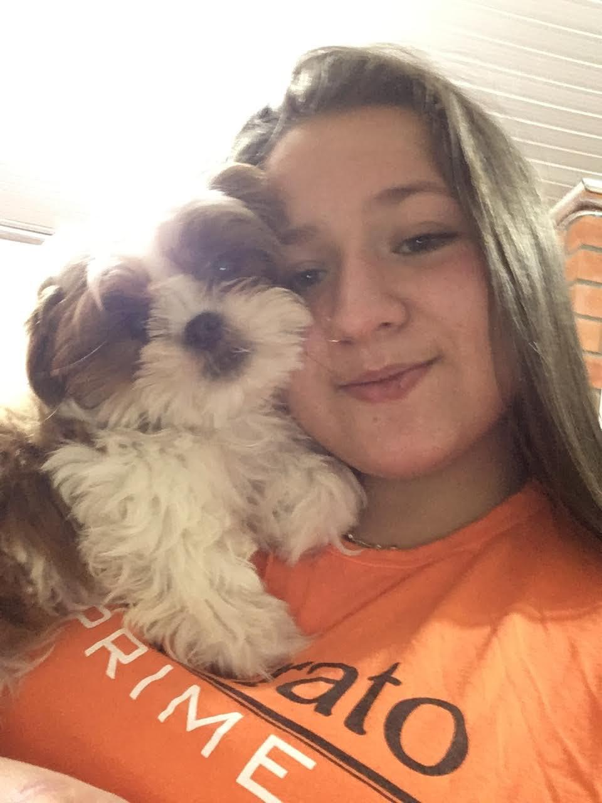
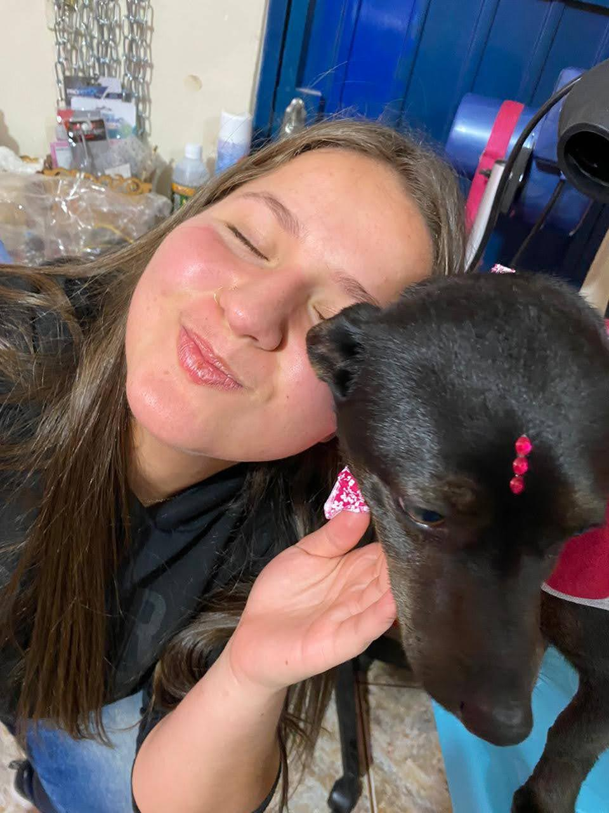
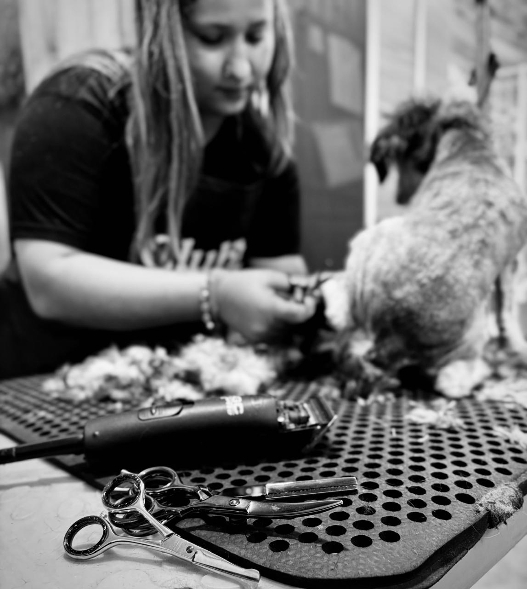
Criado com o coração, nosso espaço foi feito sob medida para garantir que cães e gatos se sintam seguros e tranquilos durante o banho e a tosa. Cada pet é tratado de forma única e especial!
Olá! Eu me chamo Sthefany, mas por aqui todo mundo me conhece como Tia Tefhy. Transformei minha paixão pelos animais no meu trabalho diário, com um espaço acolhedor, pensado nos mínimos detalhes para que cães e gatos se sintam seguros e tranquilos em cada procedimento realizado.
A pet existe desde 2020 e se consolidou como um espaço dedicado à saúde, higiene e estética animal, sempre prezando por produtos de alta qualidade e excelência, respeitando as necessidades específicas de cada espécie e pelagem, contando com uma estrutura completa, equipada para atender cães e gatos com total segurança em cada etapa.
Produtos hipoalergênicos de primeira linha, água na temperatura ideal e sistema de secagem climatizado e seguro.
Tosa baixa ou bebê com máquina e finalizações em tesoura, respeitando o padrão da raça e o conforto do animal.
Tratamento para pelos macios, brilhantes, corte de unhas e limpeza de ouvidos.
Lembrando: trabalhamos com hora marcada e táxi pet. Para quaisquer dúvidas sobre valores ou mais informações dos procedimentos mencionados acima, nos chame pelo WhatsApp!
Falar no WhatsAppUm pouquinho do resultado do nosso banho e tosa com muito amor!
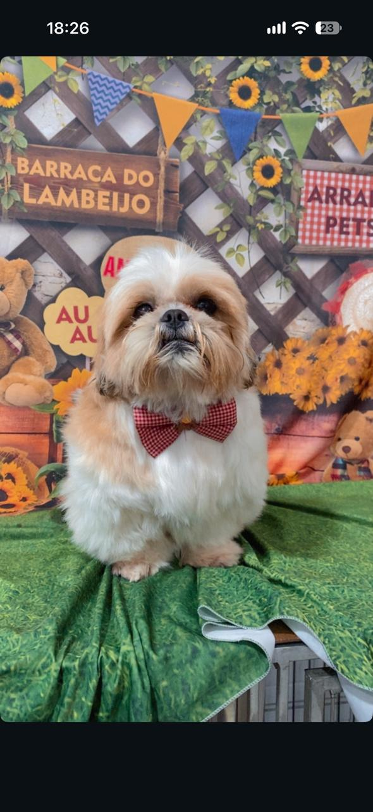
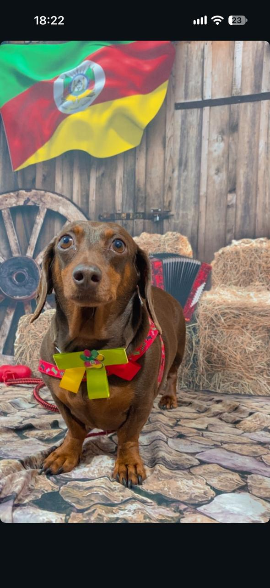
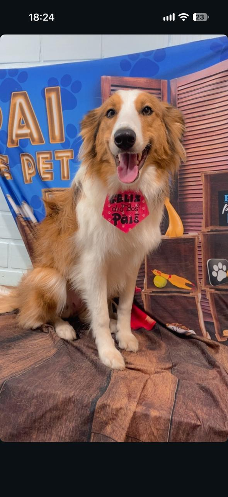
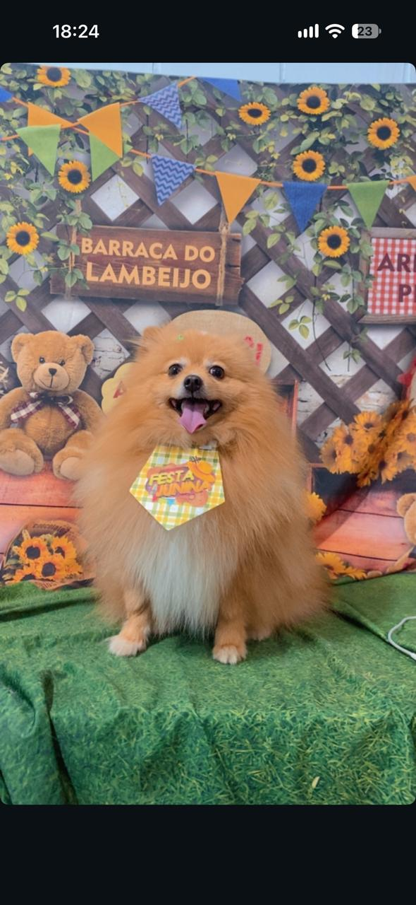
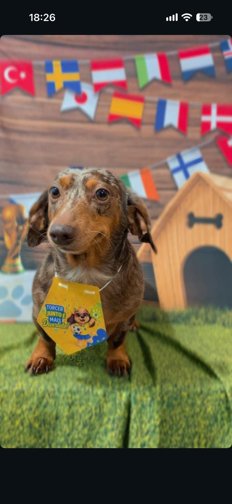
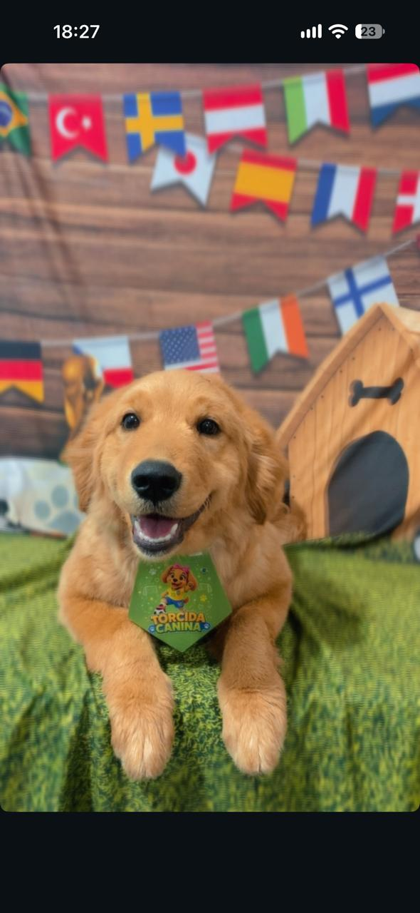
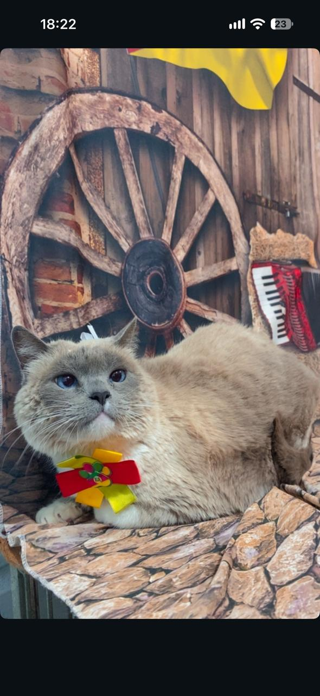
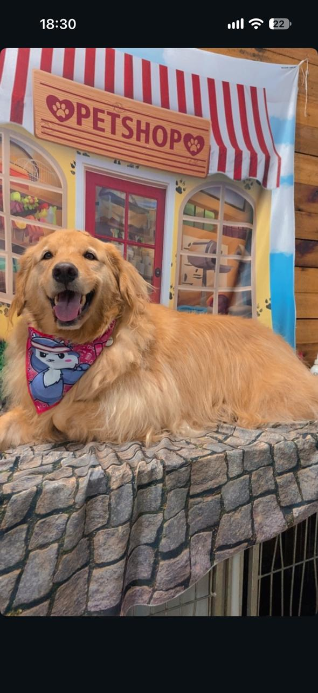
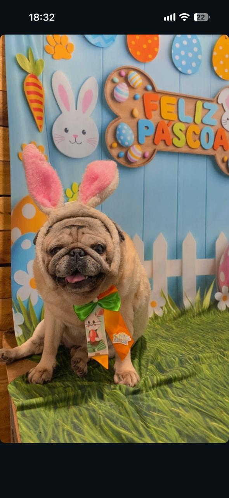
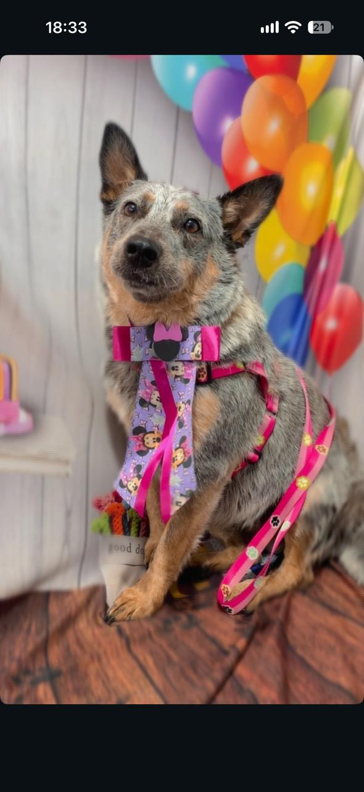
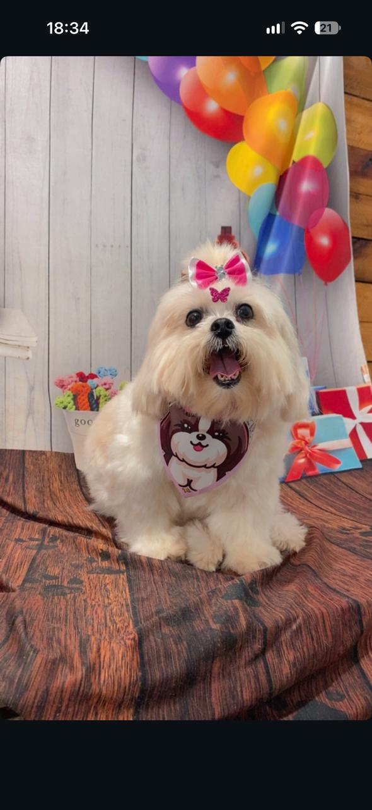
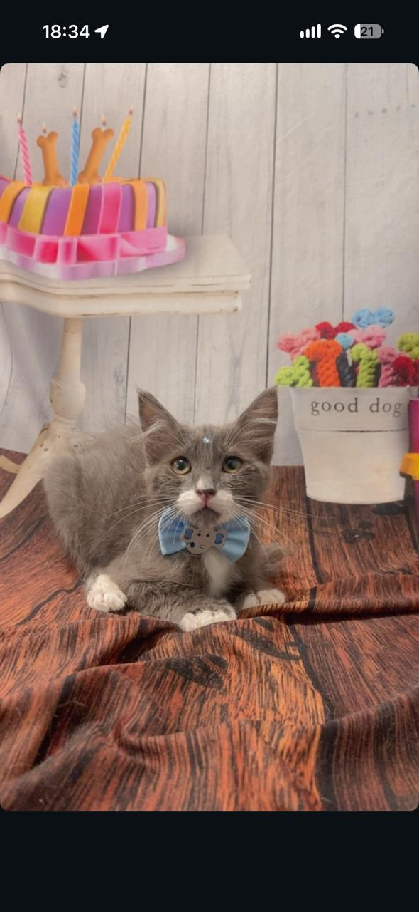
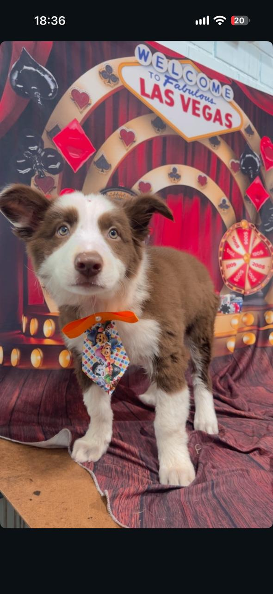
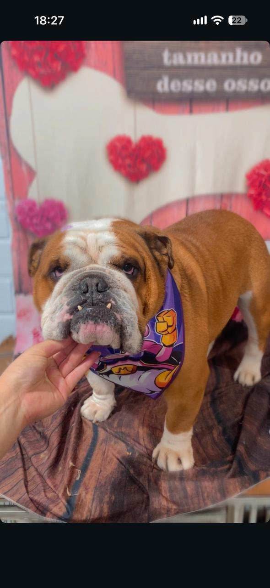
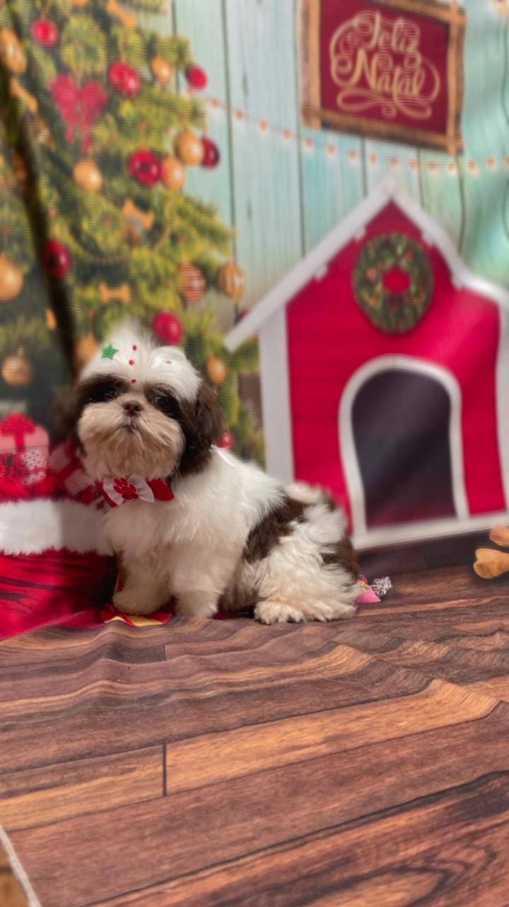
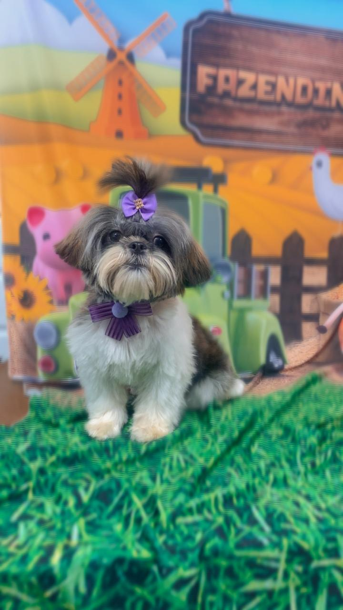